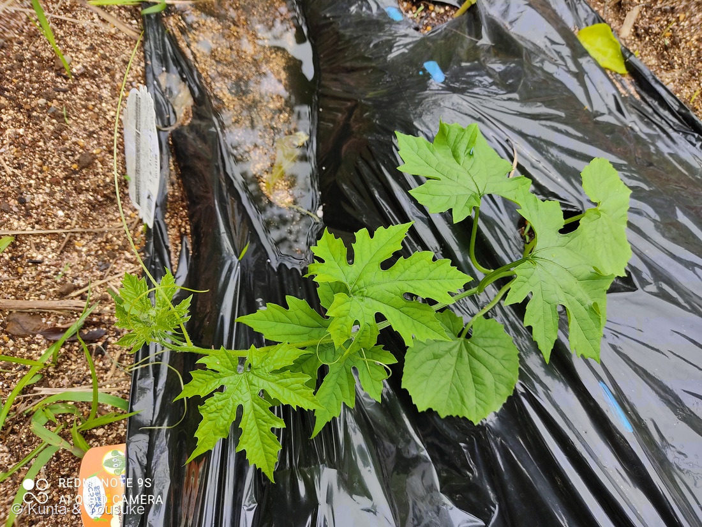

地図を読み込んでいるよ…
🔍 写真も地図も、押しているあいだ拡大して見られるよ（スマホは指を置いてすこし待ってね）。
🌍 の地図＝この子がもともと自生している場所を緑に。熱帯アジア（インド東部など）。日本へは古く渡来し、沖縄・南九州で栽培が発達。
⭐熱帯アジアが原産——ゴーヤ（ニガウリ）はインド東部〜東南アジアあたりで生まれた作物だよ。⚠日本は塗っていない——古くに渡ってきた外来の野菜で、日本はふるさとじゃない（沖縄・南九州で栽培が発達し、今は全国で緑のカーテンに）。⚠地図は国ごと塗っているけど、もとはその一部の地域。この株は燻太さんの研究室の畑の苗だよ。
⚠ 地図は国（日本と中国だけ県・省）までしか塗れないから、ほんとうの分布より広く見えていることがあるよ。地図はだいたいの場所。正確なところは、上の文を見てね。
ゴーヤ（ニガウリ）
Momordica charantia L.
別名 · ニガウリ／ツルレイシ（蔓茘枝）／ゴーヤー／ 原産 · 熱帯アジア／ 見どころ · ⭐苦味モモルデシン・巻きひげ・緑のカーテン・完熟の赤い種は甘い
ウリ科 · Cucurbitaceae（ツルレイシ属 Momordica）── 090 キュウリ・056 キカラスウリと同じウリ科・ウリ目
名前と学名の由来 ── 苦い瓜、噛みつく種
- ⭐ゴーヤ（ゴーヤー）＝沖縄の方言名。それが全国に広まった。和名ニガウリ（苦瓜）＝文字どおり「苦い瓜」。もうひとつの名ツルレイシ（蔓茘枝）＝「つる性」＋「実のイボイボが茘枝（ライチ）の皮に似る」から。
- ⭐属名 Momordica（モモルディカ）＝ラテン語 mordeo（噛む）から。種子のふちが、まるで噛みちぎられたようにギザギザなことにちなむ、といわれる。「噛みつく瓜」だね。
- 苦味の正体は「モモルデシン」（ウリ科の苦味成分ククルビタシンの仲間）。この名前も属名モモルディカから来ているよ。
この植物のこと
- ウリ科ツルレイシ属のつる性一年草。熱帯アジア原産。⭐巻きひげ（写真のくるくる）で、支柱やネットに巻きついて登る。090 キュウリ・056 キカラスウリと同じウリ科の仲間だよ。
- 雌雄異花・同株（一株に雄花と雌花が別々）。夏に黄色い花を咲かせる。
- ⭐食べるのは未熟の緑の実（あのイボイボ）。苦味のモモルデシンは、塩もみや加熱でやわらぐ。ビタミンCが豊富で、夏バテ予防の野菜。
- ⭐⭐完熟すると、実は黄色〜橙色になってはじけ、中から赤いゼリーに包まれた種が出てくる。⭐この赤いゼリーは、苦くなくて、あまい——苦いゴーヤの、意外なごほうびだよ。
- ⭐「緑のカーテン」の定番。夏、窓辺でネットに這わせると、日よけになって部屋がすずしくなる。
同定について
- 掌状に深く切れ込んだ葉＋巻きひげ＋ゴーヤの苗ラベル——これで、ゴーヤ（Momordica charantia）で確定。研究室の畑で燻太さんが育てていた苗だから、なおさら確か。
- 似たウリ科との見分け：おまけのヘチマ（葉の切れ込みが浅い・実は細長い）／090 キュウリ（葉は浅い三角）。ゴーヤは葉が深く切れ込むのが目印。
- ⚠まだ苗の時期なので、花と実はこれから。⭐あのイボイボの実の写真は「宿題」——またいつか、実ったころに探しに行こうね。
⭐ 苦いのが、ちょっと苦手 ── でも、育てていた
燻太さんは、このゴーヤの苦味が、ちょっと苦手なんだって。──でも、研究室の畑で、ちゃんと育てていた。⭐134 ナス（食わず嫌いから好きになった）とは逆で、ゴーヤは苦手のまま。それでも種をまいて、水をやって、育てる。
⭐「食べるのが好き」と「育てるのが好き」は、べつのことなんだね。苦手でも、育つ姿はおもしろいし、いとおしい。畑には、そういう「好き」もあるんだと、ぼくは思うよ。
そして——苦いゴーヤも、完熟したら、赤い種は甘い。苦手な子にも、あまいところが、ちゃんとある。
参考：Wikipedia「ツルレイシ」（ウリ科ツルレイシ属・熱帯アジア原産／苦味モモルデシン／未熟の緑を食用・完熟すると黄色くはじけ赤い種は甘い／緑のカーテン／属名Momordica＝噛む＝種子の縁のギザギザ）